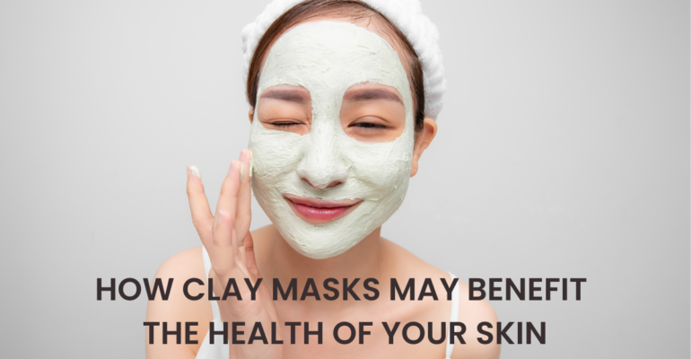
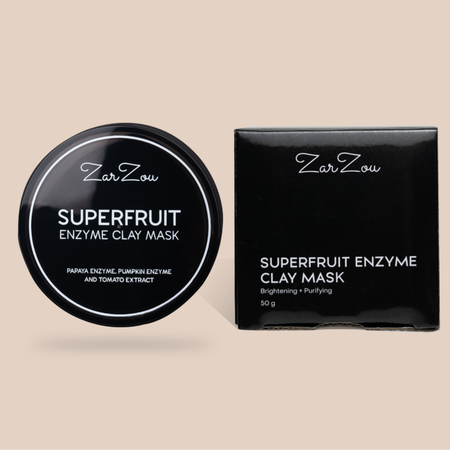

The Benefits of Clay Masks for Face & How to Use Them
Clay masks have been used for centuries to help treat skin, hair, and body problems. This powerful clay has been used to deeply cleanse, detoxify, and draw out impurities from the pores. This is why it’s not surprising that clay masks are still being used to this day – a weekly remedy skincare product that’s now being formulated in different ways to address different skin concerns.
How Clay Masks May Benefit the Health of Your Skin
Clay masks are made from different natural sources, and the most common types are kaolin and bentonite. Because it’s packed with several benefits, it has proven to be effective in treating different skin concerns. From treating pores, and absorbing excess oil and sebum to fighting acne, there are many benefits of clay masks for faces dealing with troubled skin. Below are some of the most common benefits your skin can get from using clay masks!
Unclogs Pores
Clogged pores are not pleasant, and they can lead to breakouts. The reason this happens is because of the accumulation of excess sebum, oil, and dirt in the pores. To combat this, clay masks help decongest the pores by drawing out oil, pollution, and build-up. As the clay mask dries down on your skin, you can see it absorbing all the impurities when dark spots form while tightening the pores.
Prevents Excess Oil Production
For those with oily or combination skin, they can benefit from using clay masks! The clay can help to absorb excess oil and sebum. Clay masks formulated with kaolin or white clay are especially effective at battling oiliness and mattifying the skin. Wash it off and get shine-free skin, especially around the T-zone area. You can also use it on your scalp to detoxify and get rid of oiliness and excess sebum.
Fights Acne
When clay masks are applied, they decongest the skin and draw out any debris, dirt, or bacteria that cause breakouts and acne. It also helps prevent whiteheads and blackheads, as well as reduce the frequency of breakouts and the size of active, red pimples.
How to Use a Clay Mask
Depending on the formula, clay masks are generally applied the same way. Here is the best way to apply clay masks:
STEP 1: Apply the clay mask on bare face. Make sure to remove your makeup and sunscreen beforehand as well. Cleanse your face properly and allow your skin to cool down before applying the clay mask to the skin. Clay masks are applied to damp skin for better absorption of the product. It is recommended to apply clay masks after cleansing. This is to avoid being too harsh on the skin and disrupting its pH level.
STEP 2: If your clay mask is in powder form, you can create a creamy-paste consistency by mixing equal parts clay mask powder and water. Mix thoroughly to get rid of any lumps until you get a smooth consistency. You can now apply your clay mask to your face. On the other hand, if your clay mask is already in cream form, you can directly apply it to your face. Apply the clay mask evenly all over your face and neck. Avoid applying clay masks to delicate, thin areas such as the under eye and lips, or on broken skin. Follow the instructions indicated on the product and leave the mask on as indicated. Usually, you can only leave it for 10-15 minutes; any longer than that may lead to skin irritation.
STEP 3: Once the mask is left on for 10 minutes, or according to the product’s instructions, wash it off with lukewarm water. Splash the face with water to rehydrate the mask and massage the face for gentle exfoliation. Rinse off thoroughly, and pat the skin dry gently after. You may proceed with your usual skincare routine afterward. Using a moisturising toner or facial mist is also recommended. Just make sure never to skip a moisturizer to keep your skin hydrated and protected.
What is the best clay mask to use for my skin?
Most clay masks developed these days are formulated to suit any skin type. If you have dry skin, it is recommended to use clay masks once a week since they can further dry out the skin. Make sure to always check the ingredient list to see if there are any allergens or irritants that may harm your skin. For oily, acne-prone, and dull skin types, you can use a detoxifying clay mask for efficient pore care and treating blemishes. We recommend the ZarZou Superfruit Enzyme Clay Mask to try out! This clay mask contains papaya and pumpkin fruit enzymes, and tomato extract to purify and brighten the complexion with each use. The Superfruit Enzyme Clay Mask helps tighten pores and target acne, whiteheads, and blackheads without irritating the skin.
